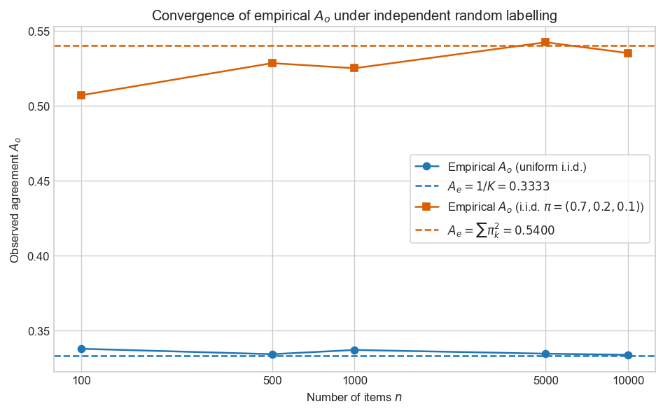
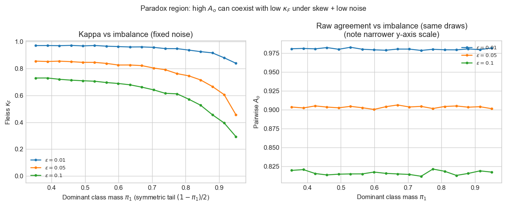
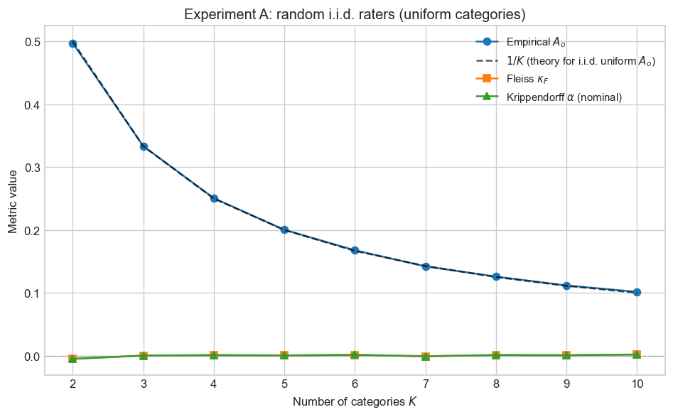
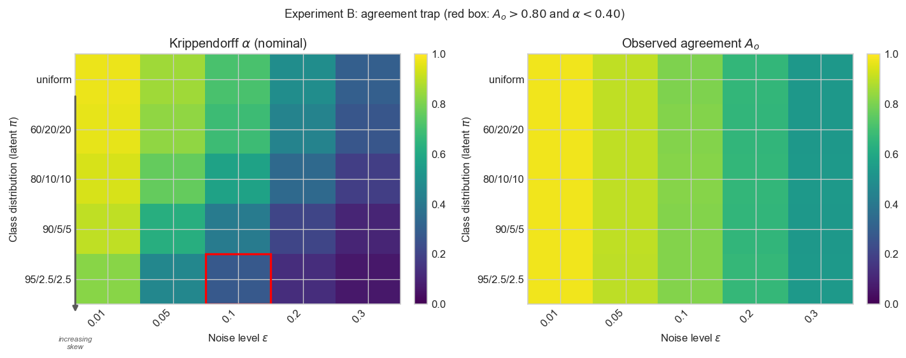
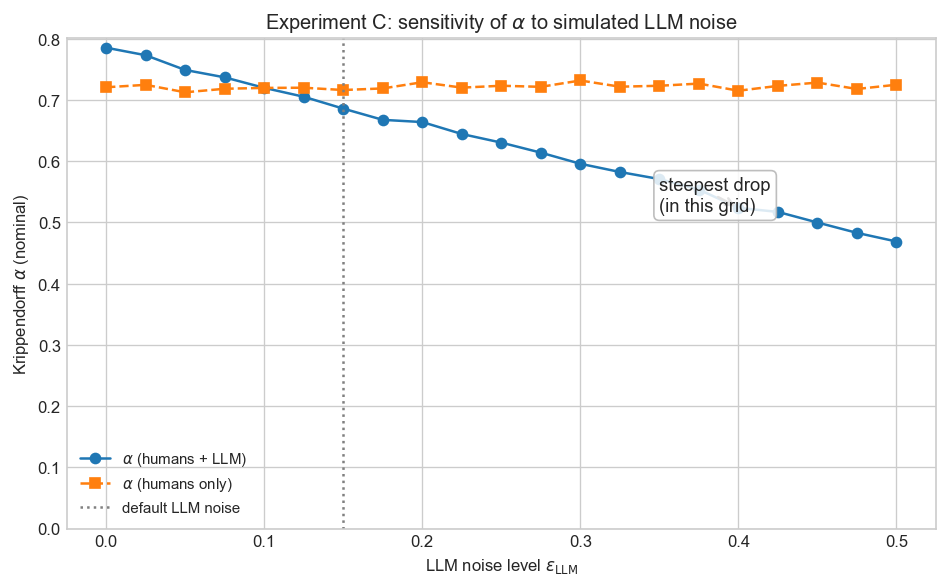
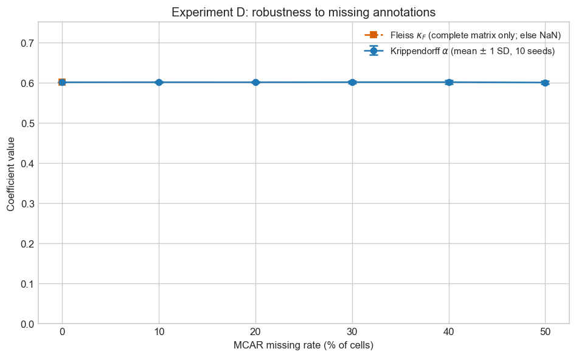

When Agreement Is an Illusion
Statistical foundations of inter-annotator agreement — from observed agreement to Krippendorff's Alpha.
Thesis. An agreement score of 0.80 can be misleading when chance agreement is not explicitly modelled. Under class imbalance and independent marginals, high observed overlap emerges without shared understanding. Krippendorff's Alpha addresses this by modelling disagreement under a randomness benchmark and generalising across raters, missing data, and measurement scales.
1. Introduction
You run an annotation exercise with a small panel of analysts. The task is simple: assign each work item to one of a few predefined categories based on its description. In parallel, you prompt an LLM to perform the same classification. The expectation is straightforward — humans provide the reference, the model approximates them.
What happens instead is less comfortable. The annotators do not consistently agree with each other. The same item is mapped to different categories depending on who reads it. Meanwhile, the LLM — given a fixed prompt — produces stable, repeatable outputs. At that point, a natural question emerges: if humans do not agree among themselves, what exactly are we asking the model to replicate?
I first encountered this setup in a workplace project where the pragmatic conclusion was that the LLM may be preferable precisely because it is consistent, even if humans are not. This conclusion is operationally appealing — but statistically fragile.
A high observed agreement, whether between humans or between humans and a model, does not necessarily indicate shared understanding. It may reflect prevalence (one category dominates), bias in marginal distributions, or structured randomness. Under skewed class distributions, independent annotators who share no latent signal can still agree on more than half of all items — and a model that shadows the majority class can look excellent without adding careful judgement.
Computational linguistics has relied on agreement coefficients since the era of corpus annotation (Artstein and Poesio, 2008), yet the community's maturity about $\kappa$ remains uneven: leaderboards still mix accuracy-style summaries with prevalence-heavy tasks. As foundation models become default labellers — deterministic annotators conditioned on prompts — the question shifts from "did we hit 80%?" to "does this automation track human exchangeability under the same instructions?" That reframing pushes toward coefficients that tolerate partial observation and respect scale.
This article follows one arc:
- Formalise agreement as an estimator and separate signal from chance (Sections 2–3).
- Introduce Cohen's and Fleiss' $\kappa$ as the standard correction, then show where they break (Sections 4–5).
- Reframe reliability through disagreement and the coincidence matrix, leading to Krippendorff's $\alpha$ (Sections 6–7).
- Validate with four controlled simulations (Section 8).
- Close with a practical framework and honest limits (Sections 9–10).
Notation. $K$ categories, $n$ items (units), $m$ raters unless stated otherwise. The annotation matrix is $(X_{ij})$ with $X_{ij} \in \{1,\ldots,K\}$. Missing judgments are allowed where noted.
2. Agreement as an estimator
2.1 The annotation problem
We consider a reliability study in which multiple annotators assign one of $K$ nominal categories to each of $n$ items. This setup appears deceptively simple. In practice, it often corresponds to tasks such as categorising work items based on textual descriptions, assigning labels in NLP pipelines, or evaluating model outputs against human judgement.
Crucially, no ground truth is directly observed. What we observe is a collection of human judgments, each shaped by interpretation, ambiguity, and individual bias. We are not measuring accuracy — we are measuring consistency of a measurement process under repeated application.
In the motivating example from the introduction, different annotators frequently disagreed on the same item — not because they were careless, but because the task itself allowed multiple plausible interpretations. The LLM, by contrast, enforced a single interpretation through a fixed prompt. This highlights the central object of study: reliability is not about correctness, but about whether the process is reproducible across agents.
This distinction between reliability (replicability of the procedure) and validity (whether categories match the world) is fundamental. Reliability can be high while validity is poor — everyone applies the same wrong rubric — and vice versa. This article addresses only reliability. Claims about ground truth or downstream utility require additional evidence.
If annotators disagree, the problem is not necessarily that agreement is low — it may be that the task does not define a single latent truth.
Formally, we represent the data as an annotation matrix $(X_{ij})$, where $X_{ij} \in \{1,\ldots,K\}$ is the label assigned by rater $j$ to item $i$. Missing entries are allowed, reflecting real annotation settings where not every rater labels every item.
2.2 Pairwise observed agreement
Fix an item $i$. Let $S_i$ be the set of unordered rater pairs $(j,\ell)$, $j<\ell$, such that both $X_{ij}$ and $X_{i\ell}$ are observed. Define an agreement indicator $I_{ij\ell} = 1$ if $X_{ij} = X_{i\ell}$, else $0$.
The observed agreement is the fraction of comparable pairs that agree:
$$ A_o = \frac{\displaystyle\sum_{i=1}^n \sum_{(j,\ell)\in S_i} I_{ij\ell}}{\displaystyle\sum_{i=1}^n |S_i|}. $$
So $A_o$ is a sample proportion of agreeing pairs, pooled over items. It estimates the probability that two randomly drawn observed ratings on the same item match, under the implicit design that weights each eligible pair equally.
Worked example (three items, two raters). Items 1 and 3 agree; item 2 disagrees. Then $A_o = 2/3$.
2.3 Global agreement: pooling judgments with replacement
Some reporting pipelines use an alternative global summary: pool all observed judgments, let $N$ be the pool size and $n_k$ the count for category $k$, and imagine drawing two judgments uniformly at random with replacement from the pool. The probability both draws equal $k$ is $(n_k/N)^2$, so
$$ P(\text{agree}) = \sum_{k=1}^K \Bigl(\frac{n_k}{N}\Bigr)^2. $$
This quantity coincides with the pairwise-within-item $A_o$ in simple balanced designs but diverges when the number of raters varies by item or missingness is uneven. It remains useful as an intuitive "overall overlap" index and matches the $\sum_k p_k^2$ algebra that reappears in Fleiss' expected agreement $\bar P_e$. The companion code implements both variants so experiments can be checked against the definition you standardise in your protocol.
2.4 What $A_o$ estimates — and what it misses
$A_o$ is a transparent descriptive statistic. What it is not is a calibrated measure of "how much better than chance" the panel behaves. Two independent annotators who each draw labels from a skewed distribution $\pi$ will still agree with probability $\sum_k \pi_k^2$, often far above zero. If your reported $A_o$ is close to that quantity, the data are compatible with independence, not with a shared latent truth.
Like any binomial-style proportion, $A_o$ has sampling variability. Wide items and sparse rare classes can make point estimates noisy; the experiments in Section 8 use $n = 10\,000$ items partly to make curves visually stable. In applied work, complement point estimates with confidence intervals (bootstrap over items is common) and with disaggregated views (per-stratum agreement, confusion matrices).
Hence the framing: treat $A_o$ as an estimator of overlap under your sampling scheme, and always ask what benchmark it should be compared to.
2.5 Two data generating processes
The experiments in this article rely on two distinct generative models. Conflating them leads to misinterpretation, so we state them explicitly.
Model 1 — Pure random labelling (no signal). Each annotator draws $X_{ij} \sim \pi$ independently. There is no latent truth per item; agreement arises only from shared marginals. This model is the null hypothesis for Sections 3 and 8.1.
Model 2 — Noisy annotation around latent truth. Each item $i$ has a latent true label $Y_i \sim \pi$. Each annotator observes $Y_i$ with noise:
$$ P(X_{ij} = k \mid Y_i) = \begin{cases} 1 - \varepsilon & \text{if } k = Y_i, \\ \varepsilon / (K-1) & \text{otherwise.} \end{cases} $$
Here $\varepsilon \in [0, 1]$ controls annotation noise. At $\varepsilon = 0$, all raters agree perfectly; at $\varepsilon = (K-1)/K$, Model 2 reduces to Model 1. Experiments B, C, and D use this model with varying $\varepsilon$ and $\pi$.
The distinction matters: under Model 1, any observed agreement is pure chance. Under Model 2, agreement decomposes into a signal component (shared latent truth) and a chance component (marginal overlap). The coefficients in this article are designed to strip away the chance component — but they assume noise is symmetric and item-independent. Structured errors (e.g. an LLM that systematically over-predicts the majority class) violate this assumption and require additional diagnostic tools beyond what $\alpha$ alone provides (see Section 9.5).
3. The chance agreement problem
3.1 Expected agreement under independence
Model. Two annotators assign labels independently, each following the same category distribution $\pi = (\pi_1,\ldots,\pi_K)$, $\pi_k \ge 0$, $\sum_k \pi_k = 1$ (Model 1 from Section 2.5). Then
$$ A_e = P(\text{both pick the same category}) = \sum_{k=1}^K \pi_k^2. $$
For uniform $\pi_k = 1/K$, we get $A_e = K \cdot (1/K)^2 = 1/K$. With $K=2$, independent coin-flip labellers agree half the time with no shared truth. With $K=3$, $A_e = 1/3$.
Imbalanced example. If $\pi = (0.7, 0.2, 0.1)$,
$$ A_e = 0.7^2 + 0.2^2 + 0.1^2 = 0.54. $$
Prevalence alone pushes the independence baseline upward.
| Setting | $A_e = \sum_k \pi_k^2$ |
|---|---|
| $K=2$, uniform | $0.50$ |
| $K=3$, uniform | $1/3 \approx 0.333$ |
| $K=3$, $\pi=(0.7,0.2,0.1)$ | $0.54$ |
The third row is the warning shot for applied reports: more than half of independent draws would already match even though three categories exist.
3.2 Random annotators: why $A_o$ does not go to zero
Suppose every matrix entry is drawn independently from $\pi$ (no shared latent item truth). Then two ratings on the same item are independent draws from $\pi$, and the probability they agree is exactly $A_e = \sum_k \pi_k^2 > 0$ for any non-degenerate $\pi$.
So "random" does not mean "zero agreement"; it means agreement at the chance level implied by the marginals. Any headline that cites $A_o$ without that context risks overstating reliability.
3.3 Empirical check: convergence to $\sum_k \pi_k^2$
The companion codebase simulates Model 1 annotators and tracks $A_o$ as item count grows. The simulation matches theory: empirical agreement concentrates on $\sum_k \pi_k^2$. If real data looked like this, the annotation process would carry no item-specific signal. Real studies usually violate that assumption — which is why we need coefficients that separate structured agreement from prevalence-driven overlap.

Figure 1. Random i.i.d. annotators: empirical observed agreement approaches the theoretical expected agreement $A_e = \sum_k \pi_k^2$ as sample size increases.
The implication is clear: $A_o$ alone cannot distinguish between genuine consensus and prevalence-driven overlap. We need a correction that subtracts the chance baseline before interpreting what remains. That is exactly what the Kappa family provides.
4. The Kappa family
4.1 The chance-correction pattern
Given an observed agreement $A_o$ and an expected agreement $A_e$ under a stated chance model, define
$$ \kappa \;=\; \frac{A_o - A_e}{1 - A_e}. $$
When $A_e < 1$:
- $\kappa = 1$ if $A_o = 1$ (perfect overlap).
- $\kappa = 0$ if $A_o = A_e$ (overlap matches the baseline).
- $\kappa < 0$ if $A_o < A_e$ (worse than the baseline).
Different coefficients differ in how $A_o$ and $A_e$ are operationalised. The denominator $1-A_e$ rescales the excess agreement so that $\kappa$ lives on a comparable scale across tasks with different baselines: the same raw gap $A_o - A_e$ means more when chance agreement was already rare than when it was ubiquitous. That rescaling is intellectually satisfying but also explains why $\kappa$ can swing dramatically when small changes in rare-class counts move $A_e$: the coefficient is ratio-based, not variance-stabilised.
4.2 Cohen's $\kappa$ (two fixed raters)
Two annotators rate the same $n$ items: $X_{i1}, X_{i2} \in \{1,\ldots,K\}$.
Observed agreement:
$$ A_o \;=\; \frac{1}{n}\sum_{i=1}^n \mathbf{1}\{X_{i1}=X_{i2}\}. $$
Expected agreement uses the empirical rater marginals. Let $p_{k\cdot} = \frac{1}{n}\sum_i \mathbf{1}\{X_{i1}=k\}$ and $p_{\cdot k} = \frac{1}{n}\sum_i \mathbf{1}\{X_{i2}=k\}$. Under independence with those marginals,
$$ A_e \;=\; \sum_{k=1}^K p_{k\cdot}\,p_{\cdot k}. $$
Cohen's kappa: $\kappa_C = (A_o - A_e)/(1-A_e)$.
Worked $2\times 2$ example (three items). With encodings A/B giving $A_o = 2/3$ and marginals $(2/3, 1/3)$ vs $(1/3, 2/3)$, one obtains $A_e = 4/9$ and $\kappa_C = 0.4$.
Cohen's $\kappa$ is symmetric in the two raters for this definition and is widely implemented (e.g. scikit-learn). Its weakness for modern annotation is structural: only two fixed individuals, no native slot for "sometimes three crowd workers, sometimes two," and ad hoc handling of missing pairs by dropping items. Those limitations are acceptable in classic test–retest studies; they bite in crowdsourcing and LLM–human panels.
4.3 Fleiss' $\kappa$ (several raters per item)
There are $n$ items and $m$ raters per item (balanced design). For item $i$, let $n_{ik}$ be the count of raters who chose category $k$ ($\sum_k n_{ik} = m$).
Extent of agreement on item $i$:
$$ P_i \;=\; \frac{1}{m(m-1)}\sum_{k=1}^K n_{ik}(n_{ik}-1), $$
the fraction of unordered rater pairs on item $i$ that agree.
Mean observed agreement: $\bar P = \frac{1}{n}\sum_i P_i$.
Pooled category proportions: $p_k = \frac{1}{nm}\sum_i n_{ik}$.
Expected agreement: $\bar P_e = \sum_k p_k^2$ (same functional form as Section 3 when all judgments share one marginal).
Fleiss' kappa: $\kappa_F = (\bar P - \bar P_e)/(1 - \bar P_e)$.
Tiny sanity check ($n=2$ items, $m=3$ raters, $K=2$). Item 1 with label counts $(2,1)$ gives $P_1 = (2\cdot 1 + 1\cdot 0)/(3\cdot 2) = 1/3$. Item 2 with counts $(0,3)$ gives $P_2 = 1$. Hence $\bar P = (1/3 + 1)/2 = 2/3$. Pooling six judgments yields $p_0 = 1/3$, $p_1 = 2/3$, so $\bar P_e = (1/3)^2 + (2/3)^2 = 5/9$ and $\kappa_F = (2/3 - 5/9)/(1 - 5/9) = (1/9)/(4/9) = 0.25$. The hand calculation matches the unit tests in the codebase — a useful anchor when debugging new simulation pipelines.
4.4 Why Kappa helps
Both $\kappa_C$ and $\kappa_F$ re-express overlap relative to a data-driven chance baseline. When $A_o$ is high only because $\bar P_e$ is high, $\kappa_F$ moves toward zero, signalling that apparent harmony is largely prevalence-driven. That is the right direction for interpretation — until the baseline and structural assumptions themselves become inadequate (Section 5).
5. Limitations of Kappa
5.1 The Kappa paradox
When one category is very prevalent, independent raters still agree often because $\bar P_e = \sum_k p_k^2$ is dominated by $p_{\text{major}}^2$. A high raw agreement can therefore coexist with low $\kappa$: the coefficient is doing its job, but readers who only track $A_o$ feel a paradox.
Clinicians have long documented "high agreement but low kappa" scenarios (Feinstein and Cicchetti, 1990): the statistical structure is the same prevalence inflation of the chance baseline. The paradox is not a quirk of one subfield — it is the predictable algebra of $\sum_k p_k^2$ when one $p_k$ nears one.
The companion codebase sweeps imbalance at fixed noise; Fleiss' $\kappa$ can sit far below raw agreement while $A_o$ stays in the "excellent" band on naive scales. The figure is not a proof; it is a visual reminder that ranking models by raw agreement can invert a ranking by $\kappa_F$ when class balance differs across conditions.

Figure 2. As the majority-class mass grows, expected agreement under independence grows with it; $\kappa_F$ can fall sharply even when naive overlap remains high. Note the narrower y-axis scale in the right panel.
5.2 Structural constraints
| Limitation | Cohen | Fleiss |
|---|---|---|
| Number of raters | Exactly two | Same $m \ge 2$ for every item |
| Missing data | Not native | Complete matrix typically required |
| Scale | Nominal | Nominal (weighted variants exist) |
Ordinal, interval, and ratio data can be squeezed into nominal bins or weighted $\kappa$, but there is no single Kappa object that natively carries metric distances between categories while handling variable numbers of judgments and missing cells in one framework.
5.3 Building the case for $\alpha$
We need a coefficient that:
- Compares observed disagreement to a chance level of disagreement under a clear random pairing model.
- Allows missing ratings without discarding entire items arbitrarily.
- Supports distances between values (ordinal steps, squared interval gaps, ratio penalties).
Krippendorff's $\alpha$ is built for that role. It does not erase the need for careful study design: if instructions are ambiguous, no coefficient will rescue interpretability. What $\alpha$ offers is a single algebraic skeleton that extends from nominal through ratio scales and respects pairable information only — the same philosophical move as using effective sample sizes in other parts of statistics.
6. From agreement to disagreement
6.1 Why shift the lens
Raw agreement and Kappa-style numerators count matches: how many pairs gave the same label? An equivalent dual view counts mismatches weighted by how far apart the assigned categories are. For nominal data, "distance" is binary — same or not. For interval data, squared differences penalise large errors more than small ones. This dual view turns out to be more general: it naturally accommodates measurement scales beyond the nominal and leads to a single formula that unifies all cases.
6.2 The reliability matrix
Krippendorff's construction starts from a reliability matrix: rows are units (items), columns are raters, entries are values (categories or numeric scores). Missing entries are excluded from all calculations; only pairs of distinct raters on the same unit contribute information. A unit with a single observed label cannot form a pair and is silently dropped — no imputation, no row deletion.
6.3 Building the coincidence matrix — a worked example
Consider three items rated by three annotators on a binary domain $\{A, B\}$:
| Unit | Rater 1 | Rater 2 | Rater 3 |
|---|---|---|---|
| 1 | A | A | B |
| 2 | B | B | — |
| 3 | A | A | A |
Step 1 — count vectors. For each unit, count how many times each value appears among observed ratings:
- Unit 1: $\mathbf{n}_1 = (2, 1)$, with $m_1 = 3$ raters.
- Unit 2: $\mathbf{n}_2 = (0, 2)$, with $m_2 = 2$ raters (Rater 3 is missing).
- Unit 3: $\mathbf{n}_3 = (3, 0)$, with $m_3 = 3$ raters.
Step 2 — local coincidence contributions. For each unit, the contribution to the coincidence matrix is proportional to how often pairs of distinct raters assigned each combination of values. For a unit with count vector $\mathbf{n}_i$, the off-diagonal entry $(c, c')$ receives $n_{ic} \cdot n_{ic'}/(m_i - 1)$, and the diagonal entry $(c, c)$ receives $n_{ic}(n_{ic} - 1)/(m_i - 1)$. The denominator $m_i - 1$ ensures that each unit contributes one unit of total mass regardless of how many raters observed it.
Applying this to our example:
- Unit 1 ($m_1 = 3$): diagonal $(A,A) = 2 \cdot 1 / 2 = 1$; diagonal $(B,B) = 1 \cdot 0 / 2 = 0$; off-diagonal $(A,B) = 2 \cdot 1 / 2 = 1$.
- Unit 2 ($m_2 = 2$): diagonal $(B,B) = 2 \cdot 1 / 1 = 2$; all other entries zero.
- Unit 3 ($m_3 = 3$): diagonal $(A,A) = 3 \cdot 2 / 2 = 3$; all other entries zero.
Step 3 — sum to get $\mathbf{O}$. Add the contributions across units:
| A | B | |
|---|---|---|
| A | 4 | 1 |
| B | 1 | 2 |
The marginals are $n_A = 5$, $n_B = 3$, and the total pairable mass is $N = 8$.
Step 4 — expected coincidence $\mathbf{E}$. Under the null hypothesis that pairs are formed by random re-pairing of the same marginal totals, the expected matrix entries are $E_{cc'} = (n_c n_{c'} - n_c \delta_{cc'}) / (N - 1)$. For instance, $E_{AB} = (5 \cdot 3) / 7 \approx 2.14$ and $E_{AA} = (5 \cdot 4) / 7 \approx 2.86$.
6.4 From coincidence to disagreement
The observed disagreement is the weighted sum $D_o^* = \sum_{c,c'} O_{cc'} D_{cc'}$, where $D_{cc'} = \delta(c, c')$ encodes distance. The expected disagreement $D_e^*$ uses $\mathbf{E}$ in the same formula. The ratio $D_o^* / D_e^*$ tells us how the panel's actual pattern of mismatches compares to what random pairing would produce.
The conceptual shift is simple: instead of "how often do we agree?", ask "how much farther apart are we than random pairing would predict?" Agreement is the special case in which distance is zero on the diagonal and one elsewhere (nominal $\delta$). Section 7 assembles these pieces into the full $\alpha$ formula.
7. Krippendorff's Alpha
7.1 Definition
Let $\delta(c,c')$ be a metric between category values (nominal, ordinal, interval, ratio — see below). Let $\mathbf{D}$ have entries $D_{cc'} = \delta(v_c, v_{c'})$ on an ordered value domain $(v_1,\ldots,v_V)$.
From the data, build the observed coincidence matrix $\mathbf{O}$ (symmetric, nonnegative) and the expected matrix $\mathbf{E}$ under the random-pairing null that preserves marginal totals derived from $\mathbf{O}$. Define scalar disagreements
$$ D_o^* = \sum_{c,c'} O_{cc'}\,D_{cc'}, \qquad D_e^* = \sum_{c,c'} E_{cc'}\,D_{cc'}. $$
Krippendorff's alpha is
$$ \alpha = 1 - \frac{D_o^*}{D_e^*}. $$
When $D_e^*$ is zero (degenerate case), $\alpha$ is not defined as a finite ratio.
7.2 Building $\mathbf{O}$ (sketch)
For each unit $i$ with $m_i \ge 2$ observed judgments, form the count vector $\mathbf{n}_i = (n_{i1},\ldots,n_{iV})$ of how many raters used each domain value. Unnormalised co-occurrence is related to $\mathbf{n}_i\mathbf{n}_i^\top$ with the diagonal adjusted so self-pairs from the same rater do not count. Scale by $1/(m_i-1)$ and sum over units. Missing raters are dropped before forming $\mathbf{n}_i$; no pair is formed with a missing cell.
Concretely, for a single unit with three raters and counts $(2,1,0)$ on domain $(v_1,v_2,v_3)$, the adjustment subtracts rater self-pairs from the outer product of counts, then divides by $m_i-1$. The resulting local matrix contributes off-diagonal mass where cross-category pairings occur; the diagonal records within-category pairings that survive the subtraction. Summing these contributions over all units yields $\mathbf{O}$. The implementation in the repository follows Krippendorff (2004) and is cross-checked against the krippendorff Python package on reference reliability matrices.
7.3 Expected coincidence
Let $n_c$ be marginals derived from $\mathbf{O}$ and $N = \sum_c n_c$ the total pairable mass. Under the standard null,
$$ E_{cc'} = \frac{n_c n_{c'} - n_c\,\delta_{cc'}}{N-1}, $$
symmetric and aligned with sampling-without-replacement intuition on pair slots.
7.4 Distance functions
- Nominal: $\delta(c,c') = 0$ if $c=c'$, else $1$.
- Interval: $(c-c')^2$.
- Ratio: $\bigl((c-c')/(c+c')\bigr)^2$ (with convention at $c+c'=0$).
- Ordinal: uses the ordered domain and category masses (not plain rank gaps without weights); see Krippendorff (2004, Ch. 11).
7.5 Boundary behaviour
Assume $D_e^* > 0$.
- Perfect reliability (for nominal $\delta$, all pairable judgments on a unit coincide): off-diagonal mass vanishes appropriately, $D_o^* = 0$, hence $\alpha = 1$.
- Chance-level disagreement: $D_o^* = D_e^*$ implies $\alpha = 0$.
- Systematic disagreement beyond the null: $D_o^* > D_e^*$ implies $\alpha < 0$.
Reading $\alpha$ as a scaled excess. When $D_e^* > 0$, rearrange $\alpha = 1 - D_o^*/D_e^*$ as
$$ \alpha = \frac{D_e^* - D_o^*}{D_e^*}. $$
So $\alpha$ is the fractional reduction of observed disagreement relative to the expected matrix under the null — analogous in spirit to how $\kappa$ expresses excess agreement relative to $1-A_e$, but built on metric weights rather than a single scalar $A_o$. Negative $\alpha$ means the pattern of weighted distances is more discordant than random pairing would predict under fixed exposure, a warning sign of systematic divergence (ambiguous guidelines, adversarial items, or instrument drift).
7.6 Relation to Cohen's $\kappa$
Cohen's $\kappa$ uses per-rater marginals on the same items. Krippendorff's $\alpha$ uses pooled coincidence marginals from $\mathbf{O}$. For two raters and nominal data, both correct for chance, but the numerical value need not equal $\kappa_C$ when $K>2$: the chance models differ. In practice, report one coefficient and stick to its interpretation, or compare both explicitly in a sensitivity table.
7.7 Software and reproducibility
The article's claims about $\alpha$ are backed by krippendorff_alpha() in the companion package, validated against published examples and the reference library. Nominal, interval, ratio, and ordinal levels are implemented with explicit value domains so that unused categories do not distort distances. When you port formulas into another language, the fragile details are usually the ordinal weights and the treatment of all-missing units — test against the reference package before trusting edge cases.
7.8 Ordinal and interval scales in practice
For interval ratings (e.g. 1–5 Likert), squaring differences in $\delta$ penalises large jumps more harshly than small ones — a natural match when errors farther apart are substantively worse. For ordinal labels, Krippendorff's construction uses the empirical totals $n_v$ to weight distances between steps on the ordered domain; this avoids the mistake of treating ordered categories as if they were equally spaced numbers unless your measurement theory supports that identification. In NLP, many "scales" are ordinal by design (fine-grained sentiment buckets); reporting nominal $\alpha$ on those buckets is conservative with respect to order information, while ordinal $\alpha$ uses more structure and therefore demands defensible spacing assumptions encoded in the value domain.
With the definition, construction, and boundary properties of $\alpha$ in place, the next step is empirical: do these properties hold in controlled simulations, and how does $\alpha$ compare to $A_o$ and $\kappa_F$ when we can compute ground-truth expectations?
8. Experiments
Four simulations (Phase 4 of the codebase) isolate properties of $A_o$, $\kappa_F$, and $\alpha$. All use fixed seeds and are reproducible via make experiments or the individual scripts/experiment_*.py commands.
They are synthetic on purpose: closed-form targets exist for random labelling, and grids over noise and imbalance are cheap to repeat. Translating the qualitative lessons to a live LLM API requires additional layers (calibration, adversarial prompts, human factors) that fall outside this article — but the algebraic pitfalls of raw agreement and the structural limits of Fleiss remain.
8.1 Experiment A: random annotators (sanity check)
Setup. Model 1 (pure random labelling), uniform $\pi$, sweep $K \in \{2,\ldots,10\}$ with $n = 10\,000$, $m=5$.
Expectation. $A_o \approx 1/K$; $\kappa_F \approx 0$; $\alpha \approx 0$.
Result. Empirical curves match theory within tight tolerance. This is a sanity check, not a finding: chance-corrected coefficients vanish when there is no shared structure. The near-perfect overlap between the $A_o$ curve and $1/K$ is a property of the model, not a bug — we simulated exactly the analytic scenario.

Figure 3. Random annotators: observed agreement tracks $1/K$; $\kappa_F$ and $\alpha$ track zero.
8.2 Experiment B: the agreement trap
Setup. Model 2 (noisy truth) with severe class skew and low $\varepsilon$ on a five-rater panel. Grid over imbalance and noise.
Formal definition. The agreement trap is the region of parameter space where raw agreement is comfortably high but chance-corrected reliability is low:
$$ \mathcal{T} = \{(\pi, \varepsilon) : A_o(\pi, \varepsilon) > 0.80 \;\wedge\; \alpha(\pi, \varepsilon) < 0.40\}. $$
This region exists because $A_e = \sum_k \pi_k^2$ grows with class imbalance. When $\pi_{\text{major}}$ nears 1, even noisy annotators agree on the dominant class most of the time, inflating $A_o$ without genuine item-level signal.
Result. Heatmaps of $A_o$ and $\alpha$ show a visible wedge occupying $\mathcal{T}$. A concrete example: with $\pi = (0.85, 0.10, 0.05)$ and $\varepsilon = 0.05$, one obtains $A_o \approx 0.84$ while $\alpha \approx 0.35$. Stakeholders see a comfortable raw percentage; the chance-corrected coefficient reveals the panel is only modestly better than a prevalence-aware random benchmark. The operational lesson: put both views in the same table by default.

Figure 4. Agreement trap: high raw overlap coexists with low chance-corrected reliability under skew + low noise.
8.3 Experiment C: LLM versus humans (synthetic)
Setup. Model 2 with three "human" annotators ($\varepsilon = 0.10$) and one "LLM" annotator ($\varepsilon$ swept in $[0, 0.5]$) on a three-class task.
Result. $\alpha$ tracks panel quality; adding a noisier rater reduces panel $\alpha$ relative to humans-only. The sensitivity curve makes the dose–response visible.
Important caveat. This experiment models LLM error as symmetric i.i.d. noise (Model 2). In practice, LLM errors are structured: a model may systematically over-predict the majority class, exhibit prompt-dependent bias, or fail on specific semantic patterns. Symmetric noise is a useful baseline, but real LLM evaluation requires additional diagnostics — confusion matrices stratified by class, adversarial probes, and analysis of where (not just how often) disagreements occur. A scenario with directional bias (e.g. the LLM always predicts the majority class when uncertain) would likely show $\alpha$ degrading faster than the symmetric case predicts.

Figure 5. Synthetic LLM vs humans: $\alpha$ responds to injected LLM noise; compare humans-only to full panel.
8.4 Experiment D: missing data
Setup. Fixed balanced panel with moderate noise; inject MCAR missingness from 0% to 50%.
Expectation. Fleiss' formulation (complete matrix) becomes undefined or NaN once entries are missing; $\alpha$ degrades gracefully because it is defined on pairable units.
Result. $\alpha$ remains stable near its complete-data value while Fleiss drops out — a practical reason to prefer $\alpha$ in sparse annotation regimes. The pairwise retention advantage is key: $\alpha$ uses all available pair information per unit, while Fleiss requires the full grid. Dropping to complete cases introduces complete-case bias when missingness correlates with item difficulty or annotator workload.
Real annotators quit mid-batch, merge requests split reviewer pools, and LLM calls time out. $\alpha$'s coincidence logic is not magic — if missingness is informative (harder items are more often skipped), no coefficient is safe — but it avoids the structural failure mode of requiring imputation or row deletion just to return a number.

Figure 6. Missing data: $\alpha$ stays informative (mean $\pm$ 1 SD over 10 seeds); Fleiss requires a complete matrix.
8.5 Synthesis
Together, the experiments support the thesis: raw agreement misleads under independence and skew; Kappa partially corrects but inherits structural limits; $\alpha$ handles missingness and unifies disagreement-based thinking — validated here on synthetic ground truth where expectations are analytic or visually clear.
9. A practical framework
9.1 When to use which metric
- Report $A_o$ as a transparent prevalence-sensitive summary, always alongside a chance-aware coefficient.
- Cohen's $\kappa$ when there are exactly two fixed raters, complete data, and nominal (or weighted) categories.
- Fleiss' $\kappa$ when every item has the same number of raters and the matrix is complete.
- Krippendorff's $\alpha$ when you have missing judgments, variable numbers of raters per unit, or you need ordinal/interval/ratio distances in one framework.
9.2 Decision flowchart (ASCII)
Start: reliability study
|
Do you have missing ratings or varying m_i per unit?
/ \
Yes No
| |
Prefer Krippendorff's alpha Exactly 2 fixed raters?
(pick level: nominal / ordinal / / \
interval / ratio) Yes No
| | |
| Cohen's kappa Same m, complete grid?
| / \
| Yes No
| Fleiss' kappa -> alpha
v
Report alpha with clear value domain and distance;
optionally also report Ao and a Kappa where valid for comparison.
9.3 Thresholds (with caveats)
No universal magic cutoff replaces domain judgment. Rules of thumb in the literature (e.g. Landis and Koch) were not built for modern skewed NLP corpora. Treat any single threshold as heuristic: use confidence intervals, sensitivity to prevalence, and error analysis on disagreed items. If $\alpha \ll 0$ while $A_o$ is high, prioritise prevalence and chance explanations before celebrating reliability.
9.4 Reporting checklist
When writing the methods section of a paper or an internal model card:
- State which agreement definition you use (within-item pairs vs global pool).
- Report $A_o$ (or equivalent) and at least one chance-aware coefficient appropriate to your design.
- Disclose $K$, approximate class frequencies, and missingness rates.
- For $\alpha$, name the measurement level (nominal vs ordinal, …) and the value domain.
- Archive code and seeds so figures and tables recompute.
9.5 Reliability is not validity (the systematic bias problem)
High $\alpha$ means annotators reproduce each other's judgments. It does not mean those judgments are correct. If all annotators consistently apply the same wrong interpretation — or if an LLM and its human trainers share the same systematic bias — reliability will be high while validity is poor. This is not a theoretical edge case: in content moderation, annotators trained on the same guidelines can reliably agree on labels that an external audit would reject.
The implication for LLM evaluation is direct: a model that perfectly mimics human annotators inherits their biases. High agreement between model and humans is necessary but not sufficient for quality. Disagreement audits, stratified error analysis, and external validation remain essential.
9.6 What agreement coefficients cannot fix
$\alpha$ is not a silver bullet. It is not a substitute for clear coding rules, training, or pilot studies. Specific limitations:
- Ambiguous items. If confusion concentrates on a handful of items, the right response is iterative guideline revision, not more data.
- Prevalence sensitivity. $\alpha$ partially addresses this through its chance model, but extreme imbalance can still compress the coefficient's dynamic range. Gwet's AC1 (Gwet, 2008) was designed specifically to be more stable under the Kappa paradox; it is worth comparing when prevalence is extreme and $\kappa$ behaves erratically.
- Distance function choice. For non-nominal data, the value of $\alpha$ depends on the chosen $\delta$. Ordinal vs interval assumptions can produce substantially different results — the choice should be justified by the measurement theory, not by which gives a higher number.
- Non-independent raters. Annotators who discuss labels, copy neighbours, or share model outputs violate the independence assumptions baked into chance models. The fix is protocol design (isolation, rotation, blinded conditions), not post-hoc algebra.
- Structured errors. As noted in Experiment C, $\alpha$ does not distinguish random disagreement from directional bias. Two annotators who systematically disagree in opposite directions can produce the same $\alpha$ as two annotators who randomly disagree — but the downstream implications are very different.
10. Conclusion
We opened with a concrete scenario: annotators disagree, an LLM is consistent, and the temptation is to trust the number that looks best. The article's argument is that high agreement can be misleading under class imbalance and independent marginals — not that it is always misleading, but that without explicitly modelling chance, there is no way to tell.
Cohen's and Fleiss' $\kappa$ subtract a prevalence-aware baseline and improve interpretation, yet they buckle under imbalance paradoxes, missing data, and inflexible nominal scaffolding. Krippendorff's $\alpha$ reframes the question around disagreement weighted by meaningful distances, with a coincidence construction that absorbs partial observation patterns. The four experiments show, in controlled settings under two explicit data generating processes, that $\alpha$ behaves as theory demands: it vanishes under pure random labelling, flags the agreement trap, responds to panel composition, and survives missingness where Fleiss cannot.
$\alpha$ is not a silver bullet. It does not detect systematic bias, does not substitute for clear annotation guidelines, and — like all chance-corrected coefficients — depends on modelling assumptions that real data can violate. Alternatives like Gwet's AC1 address specific failure modes of $\kappa$ under extreme prevalence. The right approach is rarely a single coefficient; it is a diagnostic toolkit that includes $A_o$, a chance-corrected measure, and qualitative error analysis.
For ML practice, the actionable message is procedural: never ship a single agreement percentage without stating the chance benchmark; prefer coefficients that match your sampling design and measurement scale; and invest in disagreement audits — especially when an LLM's agreement with humans is used as a proxy for safety or quality.
The opening scenario — humans disagree, the model is consistent — is not an argument against human annotation. It is a reminder that consistency and correctness are different properties, and that the distance between what you observe and what random pairing would produce is where reliability lives.
References
- Cohen, J. (1960). A coefficient of agreement for nominal scales. Educational and Psychological Measurement, 20(1), 37–46. doi:10.1177/001316446002000104
- Fleiss, J. L. (1971). Measuring nominal scale agreement among many raters. Psychological Bulletin, 76(5), 378–382. doi:10.1037/h0031619
- Feinstein, A. R., & Cicchetti, D. V. (1990). High agreement but low kappa: I. The problems of two paradoxes. Journal of Clinical Epidemiology, 43(6), 543–549. doi:10.1016/0895-4356(90)90158-L
- Krippendorff, K. (2004). Content Analysis: An Introduction to Its Methodology (2nd ed.). Sage. ISBN 978-0-7619-1544-7.
- Artstein, R., & Poesio, M. (2008). Inter-coder agreement for computational linguistics. Computational Linguistics, 34(4), 555–596. doi:10.1162/coli.07-034-R2
- Landis, J. R., & Koch, G. G. (1977). The measurement of observer agreement for categorical data. Biometrics, 33(1), 159–174. doi:10.2307/2529310
- Krippendorff, K. (2011). Computing Krippendorff’s Alpha-Reliability. Departmental Papers (ASC), University of Pennsylvania. Available online
- Gwet, K. L. (2008). Computing inter-rater reliability and its variance in the presence of high agreement. British Journal of Mathematical and Statistical Psychology, 61(1), 29–48. doi:10.1348/000711006X126600